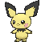
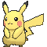
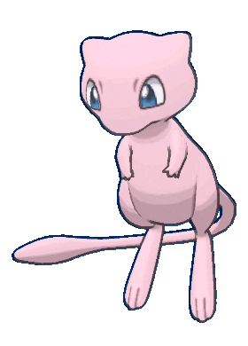
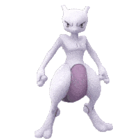

-
Bulbasaur #001

- Grama
- Veneno
Há uma semente de planta em suas costas desde o dia de que este Pókemon nasce. A semente cresce lentamente.
-
Ivysaur #002

- Grama
- Veneno
Quando o bulbo em suas costas cresce, parece perder a capacidade de ficar de pé em suas patas traseiras.
-
Venusaur #003

- Grama
- Veneno
Há uma grande flor nas costas do Venusaur. Diz-se que a flor adquire cores vivas, caso receba muita nutrição e luz solar. O aroma da flor acalma as emoções das pessoas.
-
Charmander #004

- Fogo
O fogo na ponta da cauda é uma medida de sua vida. Se saudável, sua cauda queima intensamente.
-
Charmeleon #005

- Fogo
Se ficar agitado durante a batalha, lança chamas intensas, incinerando seus arredores
-
Charizard #006

- Fogo
Cospe fogo quente o suficiente para derreter pedras. Pode causar incêndios florestais soprando chamas.
-
Squirtle #007

- Agua
Ela se abriga em sua concha, e depois revida com esguicho de água a cada oportunidade.
-
Wartortle #008

- Agua
Geralmente esconde-se na água para perseguir presas descuidadas. Para nadar rápido, move os ouvidos para manter o equilíbrio.
-
Blastoise #009

- Agua
Os jatos d'água que jorra dos canhões de foguetes em sua concha podem perfurar aço espesso.
-
Pichu #010
- Eletricidade
Não é qualificado para armazenar energia elétrica. Qualquer tipo de choque faz com que ele descarregue energia espontaneamente.
-
Pikachu #011
- Eletricidade
Ele armazena eletricidade nos sacos elétricos nas bochechas. Quando libera energia reprimida em uma explosão, a energia elétrica é igual a um raio.
-
Raichu #012

- Eletricidade
Se ele armazenar muita eletricidade, seu comportamento torna-se agressivo. Para evitar isso, ocasionalmente descarrega excesso de energia e se acalma.
-
Magikarp #013

- Agua
Diz-se ser o Pokémon mais fraco do mundo. Ninguém sabe por que conseguiu sobreviver.
-
Gyarados #014

- Agua
Raramente visto na natureza. Enorme e cruel, é capaz de destruir cidades inteiras em fúria.
-
Mew #015
- Psíquico
Como ele pode usar todos os tipos de movimentos, muitos cientistas acreditam que Mew é o ancestral dos Pokémon.
-
Mewtwo #016
- Psíquico
Como ele pode usar todos os tipos de movimentos, muitos cientistas acreditam que Mew é o ancestral dos Pokémon.